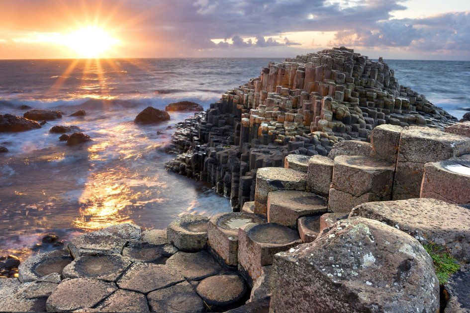

<h2>10. Дорога гигантов, Ирландия</h2>
Эта ирландская достопримечательность также появилась из-за вулканического вмешательства. Благодаря извержению, произошедшему много веков назад, здесь появились 40 000 базальтовых колонн, уходящих в море, подобно ступеням для самого настоящего великана.
</br>

</br>
Помимо, собственно, прогулки по колоннам, также интересно будет подняться вверх и обозреть живописную панораму. Кроме того, здесь есть возможность арендовать (или приехать на уже арендованном) велосипед и прокатиться по обустроенному маршруту по окрестностям.
</br>